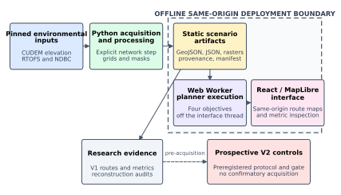
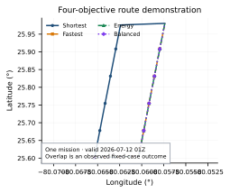
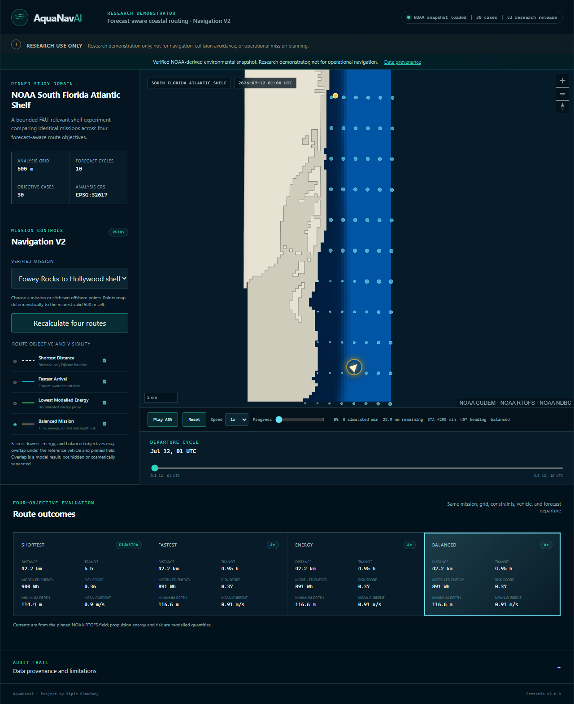

AquaNavAI: Forecast-Aware Coastal ASV Mission Planning
INFO
AquaNavAI is a research demonstrator for coastal autonomous surface vehicle mission planning. It turns pinned environmental artifacts into a navigability grid, calculates four route objectives in the browser, and visualizes the selected route with an animated ASV. The supplied manuscript is a complete confidential draft that is explicitly marked not submitted; this page does not describe the work as published or operational.
RESEARCH PROBLEM
Coastal route planning combines discrete search with bathymetric feasibility, time-varying modelled currents, vehicle assumptions, and data provenance. AquaNavAI studies how identical mission endpoints behave under distance, arrival-time, modelled-energy, and balanced objectives while keeping the evidence and limitations attached to the scenario.
SYSTEM WORKFLOW
The controlled pipeline verifies source checksums, reprojects NOAA inputs, derives a shared 500 m analysis grid, calculates route artifacts, validates their contract, and exports the same release artifacts used by the Python evidence workflow and the static browser application.

Verified architecture figure supplied with the AquaNavAI manuscript.
COASTAL DATA AND INPUTS
- NOAA CUDEM Florida 1/9 arc-second topobathymetry is the v1 bathymetry and feasibility source; it is not a navigational chart.
- NOAA Global RTOFS supplies modelled surface currents from one pinned 2026-07-12 00Z initialization, with ten released hourly departure times.
- NDBC stations 41122 and LKWF1 provide contextual observations only; they do not validate the full spatial RTOFS current field.
- NOAA ENC was provenance-audited for future chart constraints, but chart hazards and restrictions do not alter the released v1 mask. Wave forcing is deferred.
ROUTE-PLANNING OBJECTIVES
| Objective | Method | Interpretation |
|---|---|---|
| Shortest distance | Dijkstra | Geometric edge distance on the static feasible grid. |
| Fastest arrival | Time-expanded A* | Current-aware transit time without waiting or forecast extrapolation. |
| Lowest modelled energy | Time-expanded A* | Fixed reference-power proxy, not measured vessel energy. |
| Balanced mission | Time-expanded A* | Weighted time, modelled energy, current exposure, and shallow-water context; not a safety score. |

NAVIGATION DEMONSTRATION
The static application performs route calculation in a browser Web Worker, displays the four objective outcomes on a coastal map, and animates an ASV along the selected route. This recording uses the working public deployment, recalculates all four objectives, selects the balanced route, and starts the animation.
Browser recording of the public AquaNavAI research demonstration. The page remains usable if video playback is unavailable.
RESULTS AND VERIFICATION
The exploratory V1 release contains three fixed missions at ten valid times from one RTOFS initialization: 30 matched cases and 120 reconstructed routes across four planners. All 120 recorded route-constraint checks passed with zero discrete violations. These are verification outcomes for the released artifacts, not evidence that one planner is universally superior.
V1 uses a fixed 179.985 W power proxy, so modelled energy is proportional to transit time, and it contains no measured computation-time observations. A prospective V2 pre-acquisition gate passed 5 of 5 synthetic checks and 27 of 30 excluded-pilot comparisons; the criterion was not satisfied, confirmatory acquisition did not begin, and eligible confirmatory cycles, cases, and routes remained zero.

LIMITATIONS
The evidence covers one forecast initialization, three fixed missions, one region, and a 500 m grid. CUDEM is not an active chart, NDBC observations are insufficient for spatial current validation, and the system excludes waves, tides, traffic, regulations, uncertainty propagation, dynamic obstacles, collision avoidance, and calibrated vessel energy. The deterministic south-florida-v1 proxy is a software fixture and is not represented as NOAA-derived. AquaNavAI is for research demonstration only and must not be used for navigation, vessel control, or operational mission planning.